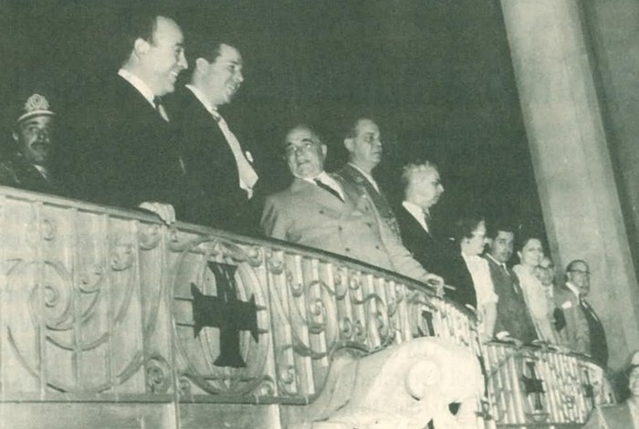
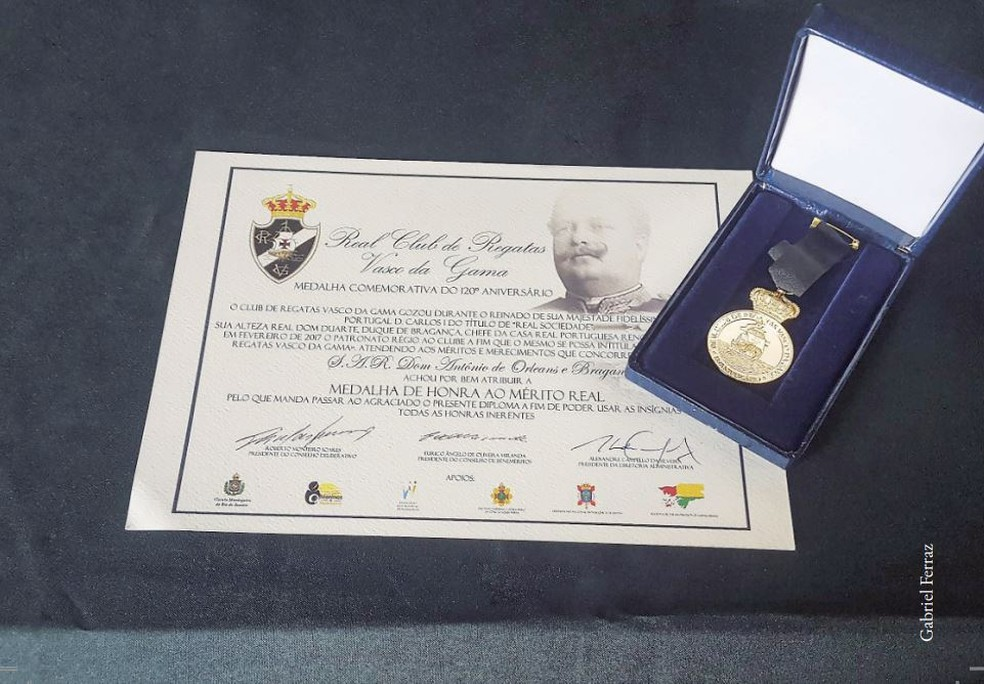

1-Salários
O Vasco foi um dos primeiros clubes do Brasil a pagar salários regulares aos jogadores ainda na década de 1920, quando o futebol oficialmente era amador, o que ajudou a atrair atletas de diferentes origens sociais.
2-Maior estadio das americas
São Januário já foi a maior praça esportiva da América do Sul no momento de sua inauguração, em 1927, superando estádios da Argentina e do Uruguai, países então mais fortes no futebol.
3-Palco Politico
O estádio de São Januário foi usado como palco para anúncios oficiais do governo federal durante a Era Vargas, incluindo discursos transmitidos por rádio para todo o país. 
4-Vasco na segunda guerra mundial
Durante a Segunda Guerra Mundial, o Vasco da Gama teve um papel patriótico importante: seu estádio, São Januário, virou escola de instrução militar para mais de 10 mil soldados e alojamento; o clube lançou a campanha "Comissão Pró-Avião", arrecadando fundos para doar dois aviões de combate à FAB, pintados com a cruz de malta; e organizou eventos beneficentes para ajudar vítimas dos ataques nazistas, demonstrando grande solidariedade e patriotismo.
5-Ação de se admirar
O Vasco foi o primeiro clube brasileiro a ter um estatuto que permitia oficialmente a participação de atletas de qualquer nacionalidade, algo raro no início do século XX.
6-um dos únicos a preservar sua historia
A afirmação de que o Vasco da Gama foi um dos primeiros clubes do país a manter arquivos históricos organizados, preservando atas, fotos e documentos desde sua fundação, é correta em essência,o Vasco sempre teve uma forte ligação com sua história e identidade (algo raro para um clube no início do século XX), o que naturalmente levou à preservação informal de documentos importantes.
7-Real Vasco da Gama
Em 1907, como reconhecimento aos feitos do Vasco a favor das raízes portuguesas, o Rei Dom Carlos I promulgou o chamado Alvará Régio. O documento real seria entregue ao clube no ano seguinte, 1908, durante visita do Rei de Portugal ao Brasil para comemorar os 100 anos da abertura dos portos do Rio de Janeiro às nações amigas. No entanto, em 1 de fevereiro de 1908, o rei foi assassinado. Houve um regicídio, mataram o rei e o príncipe real. O rei não veio, o título não foi entregue e ficou esquecido na história. 